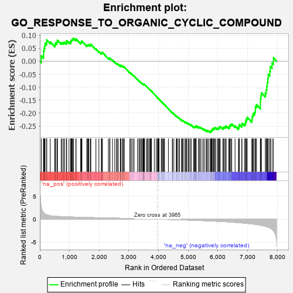
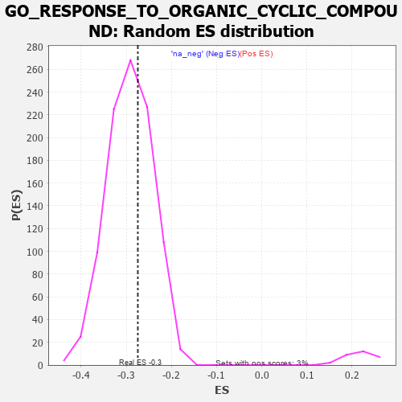

| | | Dataset | 7d |
| Phenotype | NoPhenotypeAvailable |
| Upregulated in class | na_neg |
| GeneSet | GO_RESPONSE_TO_ORGANIC_CYCLIC_COMPOUND |
| Enrichment Score (ES) | -0.27443928 |
| Normalized Enrichment Score (NES) | -0.9404141 |
| Nominal p-value | 0.62371135 |
| FDR q-value | 0.9167425 |
| FWER p-Value | 1.0 |
Table: GSEA Results Summary

Fig 1: Enrichment plot: GO_RESPONSE_TO_ORGANIC_CYCLIC_COMPOUND
Profile of the Running ES Score & Positions of GeneSet Members on the Rank Ordered List
| PROBE | GENE SYMBOL | GENE_TITLE | RANK IN GENE LIST | RANK METRIC SCORE | RUNNING ES | CORE ENRICHMENT | | 1 | TGFB3 | | | 49 | 2.654 | 0.0204 | No |
| 2 | ADCY8 | | | 124 | 1.418 | 0.0251 | No |
| 3 | GLB1 | | | 125 | 1.416 | 0.0393 | No |
| 4 | CASP6 | | | 145 | 1.300 | 0.0500 | No |
| 5 | AXIN1 | | | 166 | 1.159 | 0.0590 | No |
| 6 | FOXF1 | | | 176 | 1.136 | 0.0693 | No |
| 7 | UFSP2 | | | 230 | 0.981 | 0.0724 | No |
| 8 | SMAD5 | | | 231 | 0.979 | 0.0822 | No |
| 9 | GSK3A | | | 351 | 0.745 | 0.0744 | No |
| 10 | MYOD1 | | | 504 | 0.628 | 0.0611 | No |
| 11 | CNOT2 | | | 514 | 0.625 | 0.0662 | No |
| 12 | RWDD1 | | | 526 | 0.621 | 0.0710 | No |
| 13 | APEX1 | | | 577 | 0.604 | 0.0707 | No |
| 14 | CCNB1 | | | 581 | 0.601 | 0.0763 | No |
| 15 | PITX3 | | | 594 | 0.596 | 0.0808 | No |
| 16 | ID1 | | | 719 | 0.555 | 0.0704 | No |
| 17 | ELK1 | | | 752 | 0.545 | 0.0718 | No |
| 18 | BLM | | | 804 | 0.531 | 0.0705 | No |
| 19 | RAE1 | | | 827 | 0.524 | 0.0730 | No |
| 20 | HMGB2 | | | 892 | 0.507 | 0.0698 | No |
| 21 | HDAC5 | | | 900 | 0.506 | 0.0740 | No |
| 22 | HCFC1 | | | 902 | 0.506 | 0.0790 | No |
| 23 | UBA5 | | | 982 | 0.488 | 0.0737 | No |
| 24 | AKT1 | | | 1040 | 0.476 | 0.0712 | No |
| 25 | YAP1 | | | 1041 | 0.475 | 0.0759 | No |
| 26 | MEF2C | | | 1054 | 0.473 | 0.0791 | No |
| 27 | AIFM1 | | | 1072 | 0.469 | 0.0817 | No |
| 28 | RAD51 | | | 1090 | 0.466 | 0.0842 | No |
| 29 | G6PC | | | 1121 | 0.459 | 0.0849 | No |
| 30 | SRC | | | 1128 | 0.459 | 0.0888 | No |
| 31 | KCTD6 | | | 1213 | 0.444 | 0.0824 | No |
| 32 | RBBP7 | | | 1220 | 0.443 | 0.0861 | No |
| 33 | TAF2 | | | 1375 | 0.415 | 0.0704 | No |
| 34 | FKBP4 | | | 1390 | 0.412 | 0.0728 | No |
| 35 | CARM1 | | | 1413 | 0.408 | 0.0740 | No |
| 36 | P2RY1 | | | 1416 | 0.407 | 0.0779 | No |
| 37 | TADA3 | | | 1580 | 0.378 | 0.0607 | No |
| 38 | RNF6 | | | 1605 | 0.373 | 0.0613 | No |
| 39 | CDK4 | | | 1626 | 0.370 | 0.0625 | No |
| 40 | RXRA | | | 1647 | 0.365 | 0.0636 | No |
| 41 | ERCC8 | | | 1699 | 0.357 | 0.0606 | No |
| 42 | DDX18 | | | 1711 | 0.355 | 0.0628 | No |
| 43 | KDM5D | | | 1716 | 0.353 | 0.0658 | No |
| 44 | PAK3 | | | 1889 | 0.322 | 0.0469 | No |
| 45 | GPX4 | | | 1989 | 0.306 | 0.0372 | No |
| 46 | KCNC2 | | | 2075 | 0.295 | 0.0292 | No |
| 47 | KDM3A | | | 2078 | 0.294 | 0.0319 | No |
| 48 | TAF7 | | | 2092 | 0.292 | 0.0332 | No |
| 49 | BMP7 | | | 2107 | 0.290 | 0.0343 | No |
| 50 | REST | | | 2308 | 0.259 | 0.0112 | No |
| 51 | CDC5L | | | 2353 | 0.253 | 0.0080 | No |
| 52 | RNLS | | | 2358 | 0.252 | 0.0101 | No |
| 53 | SIN3A | | | 2361 | 0.251 | 0.0123 | No |
| 54 | KDM1A | | | 2447 | 0.237 | 0.0038 | No |
| 55 | MBD3 | | | 2524 | 0.223 | -0.0038 | No |
| 56 | PIAS2 | | | 2581 | 0.215 | -0.0088 | No |
| 57 | PDE12 | | | 2608 | 0.211 | -0.0100 | No |
| 58 | KAT5 | | | 2644 | 0.206 | -0.0125 | No |
| 59 | PHB2 | | | 2712 | 0.197 | -0.0191 | No |
| 60 | DDX1 | | | 2718 | 0.196 | -0.0178 | No |
| 61 | SLIT2 | | | 2724 | 0.195 | -0.0165 | No |
| 62 | RORA | | | 2730 | 0.193 | -0.0152 | No |
| 63 | XRN1 | | | 2786 | 0.185 | -0.0204 | No |
| 64 | AQP3 | | | 2796 | 0.184 | -0.0197 | No |
| 65 | PCK2 | | | 2823 | 0.180 | -0.0212 | No |
| 66 | NR2E1 | | | 2844 | 0.177 | -0.0220 | No |
| 67 | LEF1 | | | 3037 | 0.144 | -0.0453 | No |
| 68 | UFL1 | | | 3041 | 0.144 | -0.0443 | No |
| 69 | HDAC1 | | | 3086 | 0.138 | -0.0485 | No |
| 70 | OGG1 | | | 3135 | 0.132 | -0.0534 | No |
| 71 | AHR | | | 3175 | 0.126 | -0.0571 | No |
| 72 | TRIP4 | | | 3290 | 0.107 | -0.0707 | No |
| 73 | SMAD1 | | | 3337 | 0.099 | -0.0757 | No |
| 74 | EPG5 | | | 3368 | 0.094 | -0.0786 | No |
| 75 | MED1 | | | 3405 | 0.089 | -0.0823 | No |
| 76 | RXRG | | | 3435 | 0.085 | -0.0852 | No |
| 77 | CNOT1 | | | 3473 | 0.081 | -0.0892 | No |
| 78 | LDHA | | | 3479 | 0.080 | -0.0890 | No |
| 79 | CDK5 | | | 3480 | 0.080 | -0.0882 | No |
| 80 | RGS8 | | | 3490 | 0.079 | -0.0886 | No |
| 81 | FES | | | 3501 | 0.077 | -0.0891 | No |
| 82 | UFM1 | | | 3506 | 0.077 | -0.0888 | No |
| 83 | UBR5 | | | 3518 | 0.074 | -0.0895 | No |
| 84 | PQBP1 | | | 3526 | 0.072 | -0.0897 | No |
| 85 | MAPK3 | | | 3589 | 0.062 | -0.0970 | No |
| 86 | CBL | | | 3621 | 0.056 | -0.1004 | No |
| 87 | FIS1 | | | 3654 | 0.051 | -0.1041 | No |
| 88 | DHX9 | | | 3693 | 0.044 | -0.1085 | No |
| 89 | HSF1 | | | 3718 | 0.039 | -0.1112 | No |
| 90 | DAXX | | | 3722 | 0.038 | -0.1112 | No |
| 91 | HTR1B | | | 3745 | 0.035 | -0.1137 | No |
| 92 | SRSF2 | | | 3759 | 0.033 | -0.1150 | No |
| 93 | DGKQ | | | 3856 | 0.020 | -0.1272 | No |
| 94 | IFIH1 | | | 3919 | 0.006 | -0.1351 | No |
| 95 | NCOR1 | | | 3961 | 0.000 | -0.1404 | No |
| 96 | CRLS1 | | | 3975 | -0.003 | -0.1420 | No |
| 97 | VPS35 | | | 3989 | -0.006 | -0.1436 | No |
| 98 | DDX58 | | | 3998 | -0.007 | -0.1446 | No |
| 99 | RNF14 | | | 4013 | -0.010 | -0.1463 | No |
| 100 | PARP1 | | | 4014 | -0.010 | -0.1462 | No |
| 101 | PDE4B | | | 4089 | -0.022 | -0.1555 | No |
| 102 | MTOR | | | 4114 | -0.025 | -0.1584 | No |
| 103 | ABL1 | | | 4125 | -0.027 | -0.1594 | No |
| 104 | DDX17 | | | 4161 | -0.035 | -0.1635 | No |
| 105 | PDX1 | | | 4179 | -0.038 | -0.1653 | No |
| 106 | GGT7 | | | 4200 | -0.041 | -0.1675 | No |
| 107 | OPA1 | | | 4330 | -0.065 | -0.1834 | No |
| 108 | NEDD8 | | | 4465 | -0.087 | -0.1998 | No |
| 109 | LRRK2 | | | 4467 | -0.087 | -0.1991 | No |
| 110 | GPR83 | | | 4471 | -0.088 | -0.1986 | No |
| 111 | SNW1 | | | 4514 | -0.096 | -0.2030 | No |
| 112 | PDCD7 | | | 4595 | -0.117 | -0.2121 | No |
| 113 | ADTRP | | | 4612 | -0.120 | -0.2130 | No |
| 114 | SDK1 | | | 4627 | -0.124 | -0.2135 | No |
| 115 | MTAP | | | 4675 | -0.133 | -0.2182 | No |
| 116 | RAP1B | | | 4706 | -0.140 | -0.2207 | No |
| 117 | PIM1 | | | 4776 | -0.152 | -0.2281 | No |
| 118 | WBP2 | | | 4780 | -0.153 | -0.2269 | No |
| 119 | P2RX4 | | | 4813 | -0.161 | -0.2294 | No |
| 120 | ABCD3 | | | 4829 | -0.164 | -0.2297 | No |
| 121 | CLU | | | 4889 | -0.174 | -0.2355 | No |
| 122 | SLIT3 | | | 4890 | -0.175 | -0.2338 | No |
| 123 | CBX3 | | | 4923 | -0.183 | -0.2361 | No |
| 124 | EP300 | | | 4941 | -0.186 | -0.2364 | No |
| 125 | AOC1 | | | 4993 | -0.197 | -0.2410 | No |
| 126 | KLF4 | | | 5005 | -0.198 | -0.2404 | No |
| 127 | CASP7 | | | 5038 | -0.206 | -0.2424 | No |
| 128 | DRD2 | | | 5088 | -0.221 | -0.2465 | No |
| 129 | DDX54 | | | 5093 | -0.222 | -0.2448 | No |
| 130 | HDAC6 | | | 5183 | -0.244 | -0.2538 | No |
| 131 | SMO | | | 5195 | -0.247 | -0.2527 | No |
| 132 | TMF1 | | | 5225 | -0.251 | -0.2539 | No |
| 133 | DDX21 | | | 5231 | -0.252 | -0.2521 | No |
| 134 | SSH1 | | | 5254 | -0.258 | -0.2523 | No |
| 135 | PTEN | | | 5262 | -0.261 | -0.2506 | No |
| 136 | CDK1 | | | 5264 | -0.262 | -0.2481 | No |
| 137 | TCF21 | | | 5340 | -0.283 | -0.2549 | No |
| 138 | LMO3 | | | 5342 | -0.283 | -0.2522 | No |
| 139 | GRIN1 | | | 5381 | -0.291 | -0.2541 | No |
| 140 | LATS1 | | | 5412 | -0.298 | -0.2550 | No |
| 141 | CPT1A | | | 5467 | -0.311 | -0.2588 | No |
| 142 | VDR | | | 5517 | -0.325 | -0.2619 | No |
| 143 | FOLR2 | | | 5563 | -0.336 | -0.2643 | No |
| 144 | LARP1 | | | 5616 | -0.349 | -0.2675 | No |
| 145 | G6PD | | | 5638 | -0.358 | -0.2666 | No |
| 146 | CASP8 | | | 5678 | -0.369 | -0.2679 | No |
| 147 | CALCR | | | 5730 | -0.386 | -0.2706 | Yes |
| 148 | TLR2 | | | 5761 | -0.395 | -0.2704 | Yes |
| 149 | CIB2 | | | 5774 | -0.398 | -0.2680 | Yes |
| 150 | PMVK | | | 5792 | -0.403 | -0.2661 | Yes |
| 151 | ADA | | | 5798 | -0.405 | -0.2627 | Yes |
| 152 | ANXA7 | | | 5827 | -0.413 | -0.2621 | Yes |
| 153 | STRN3 | | | 5849 | -0.417 | -0.2607 | Yes |
| 154 | ATG7 | | | 5858 | -0.420 | -0.2575 | Yes |
| 155 | CDO1 | | | 5892 | -0.432 | -0.2574 | Yes |
| 156 | KCNQ1 | | | 5918 | -0.441 | -0.2561 | Yes |
| 157 | GABPA | | | 5977 | -0.464 | -0.2589 | Yes |
| 158 | PTPRN | | | 6007 | -0.474 | -0.2579 | Yes |
| 159 | TRPC3 | | | 6035 | -0.483 | -0.2565 | Yes |
| 160 | NR2E3 | | | 6048 | -0.488 | -0.2532 | Yes |
| 161 | CALR | | | 6077 | -0.499 | -0.2518 | Yes |
| 162 | EGR1 | | | 6165 | -0.527 | -0.2577 | Yes |
| 163 | KLF2 | | | 6182 | -0.532 | -0.2544 | Yes |
| 164 | SMAD2 | | | 6216 | -0.541 | -0.2532 | Yes |
| 165 | TFAP4 | | | 6254 | -0.556 | -0.2524 | Yes |
| 166 | FLOT1 | | | 6276 | -0.564 | -0.2494 | Yes |
| 167 | NPC1 | | | 6364 | -0.602 | -0.2546 | Yes |
| 168 | TRPM4 | | | 6390 | -0.612 | -0.2516 | Yes |
| 169 | RALB | | | 6399 | -0.617 | -0.2464 | Yes |
| 170 | ABCA2 | | | 6433 | -0.634 | -0.2443 | Yes |
| 171 | SRR | | | 6464 | -0.646 | -0.2417 | Yes |
| 172 | P2RX5 | | | 6576 | -0.699 | -0.2490 | Yes |
| 173 | PAK1 | | | 6691 | -0.757 | -0.2560 | Yes |
| 174 | EGFR | | | 6708 | -0.765 | -0.2504 | Yes |
| 175 | GSK3B | | | 6719 | -0.768 | -0.2440 | Yes |
| 176 | KYNU | | | 6802 | -0.816 | -0.2463 | Yes |
| 177 | ADAM9 | | | 6808 | -0.819 | -0.2387 | Yes |
| 178 | HCN1 | | | 6895 | -0.865 | -0.2411 | Yes |
| 179 | LRP8 | | | 6931 | -0.889 | -0.2367 | Yes |
| 180 | GHSR | | | 6937 | -0.894 | -0.2283 | Yes |
| 181 | DNM1L | | | 6963 | -0.913 | -0.2224 | Yes |
| 182 | PDE2A | | | 6985 | -0.927 | -0.2158 | Yes |
| 183 | CFTR | | | 7143 | -1.030 | -0.2256 | Yes |
| 184 | DDX5 | | | 7152 | -1.037 | -0.2162 | Yes |
| 185 | AR | | | 7169 | -1.046 | -0.2078 | Yes |
| 186 | TSPO | | | 7194 | -1.065 | -0.2001 | Yes |
| 187 | ABCA1 | | | 7243 | -1.113 | -0.1951 | Yes |
| 188 | HCN4 | | | 7260 | -1.134 | -0.1858 | Yes |
| 189 | PLPP1 | | | 7262 | -1.135 | -0.1745 | Yes |
| 190 | MSX2 | | | 7299 | -1.171 | -0.1674 | Yes |
| 191 | KLF5 | | | 7429 | -1.304 | -0.1709 | Yes |
| 192 | OTC | | | 7430 | -1.305 | -0.1577 | Yes |
| 193 | MMP19 | | | 7433 | -1.309 | -0.1448 | Yes |
| 194 | GGT1 | | | 7447 | -1.329 | -0.1332 | Yes |
| 195 | CNGA3 | | | 7463 | -1.353 | -0.1215 | Yes |
| 196 | ASNS | | | 7595 | -1.547 | -0.1228 | Yes |
| 197 | TRPA1 | | | 7625 | -1.608 | -0.1104 | Yes |
| 198 | TAF1 | | | 7643 | -1.633 | -0.0961 | Yes |
| 199 | HCN2 | | | 7662 | -1.668 | -0.0817 | Yes |
| 200 | TRPM2 | | | 7680 | -1.712 | -0.0666 | Yes |
| 201 | ADCY1 | | | 7695 | -1.752 | -0.0508 | Yes |
| 202 | CASP3 | | | 7747 | -1.902 | -0.0383 | Yes |
| 203 | PDE4D | | | 7764 | -1.944 | -0.0208 | Yes |
| 204 | PKD2 | | | 7822 | -2.167 | -0.0063 | Yes |
| 205 | CALM3 | | | 7869 | -2.525 | 0.0131 | Yes |
Table: GSEA details [plain text format]

Fig 2: GO_RESPONSE_TO_ORGANIC_CYCLIC_COMPOUND: Random ES distribution
Gene set null distribution of ES for GO_RESPONSE_TO_ORGANIC_CYCLIC_COMPOUND